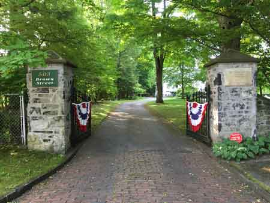
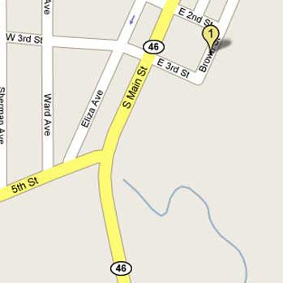
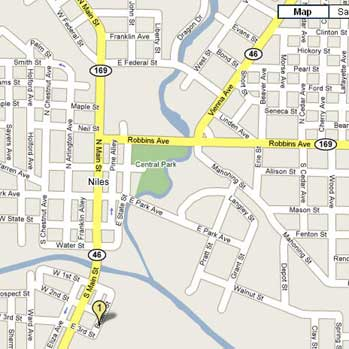

|
Individual Membership: $20.00
Family Membership: $30.00
Patron Membership: $50.00
Business Membership: $100.00
Lifetime Membership: $500.00
Corporate Membership:
Call 330.544.2143
Do you love the history of Niles, Ohio
and want to preserve that history and memories of events for future generations?
Click
here to donate:
As a 501(c)3 non-profit organization,
your donation is tax deductible. When you click on the Donate Button,
you will be taken to a secure Website where your donation will entered
and a receipt generated.
|
The
Ward-Thomas Museum, Home of the Niles Historical Society is located
on:
503 Brown Street
Niles, Ohio 44446

Entrance
Gate to Ward-Thomas Museum |
|
| From Interstate
76 and the Ohio Turnpike:
Take the I-76 Niles Exit and head North on Route
46 through Mineral Ridge
|
|
| |
|
Continue
on Route 46 towards Niles.
At the first traffic signal on South Main Street in Niles, turn
right onto East Third Street.
This dead-ends at Brown street and the entrance to the Ward-Thomas
Museum. |
 |
|
|
|
From Route 11:
Take the Niles Exit on Route 11.
Turn right on Tibbetts-Wick Road, Route 169.
Continue on Route 169, Robbins Avenue.
Turn left on Noth Main Street, Route 46.
Continue through the downtown area and over the bridge.
Turn left at the second traffic light past the bridge, East Third
Avenue.
This will dead-end on Brown Street and the entrance to the Ward-Thomas
Museum. |
|
 |
|
|
|
From the North:
Cleveland:
Route 422 East
Route 5 Bypass, Route 82 East.
Take Route 46 Exit South towards Niles
Continue through the downtown area and over the bridge.
Turn left at the second traffic light past the bridge, East Third
Avenue.
This will dead-end on Brown Street and the entrance to the Ward-Thomas
Museum.
From Leavittsburg:
Route 5 Bypass, Route 82 East.
Take Route 46 Exit South towards Niles
Continue through the downtown area and over the bridge.
Turn left at the second traffic light past the bridge, East Third
Avenue.
This will dead-end on Brown Street and the entrance to the Ward-Thomas
Museum. |
|
|
|
| Back to top |
|
|